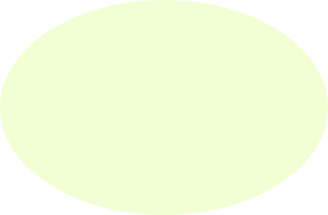
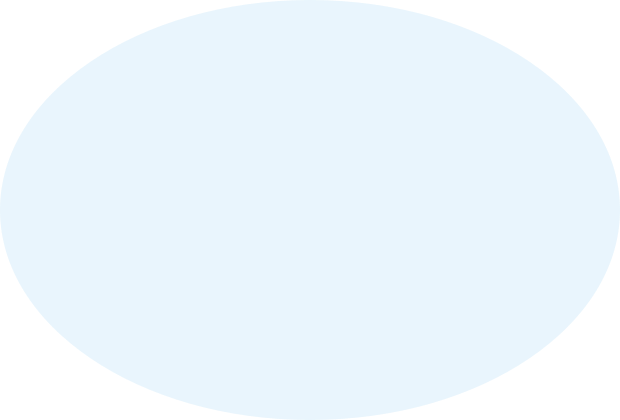
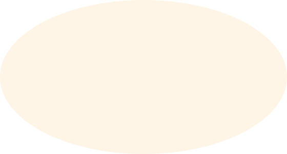
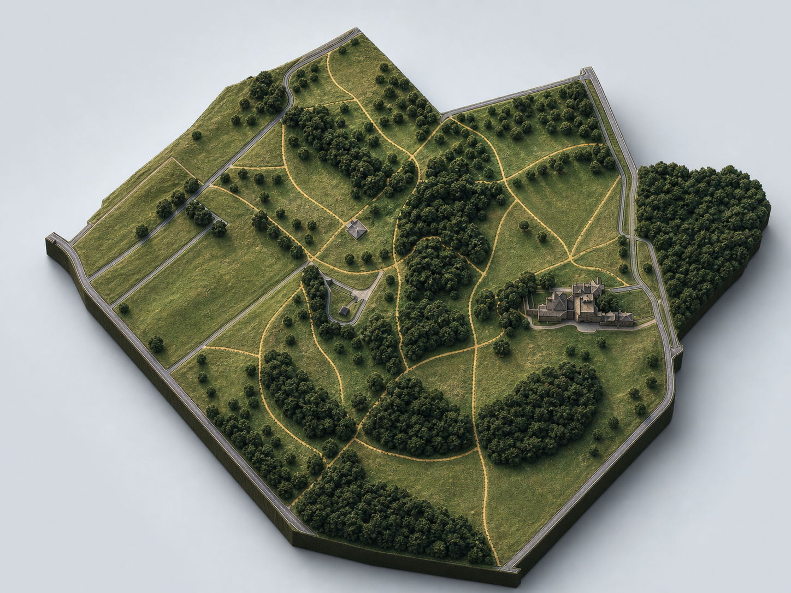
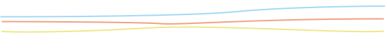

Cycle 2: RAI above range, VCI below range, PPI rising but still under watch

Open the alternative feeding patch and reduce pressure on Patch A for the next 2 cycles.
Patch A shows concentrated rabbit activity, while vegetation remains below the threshold over both cycles.